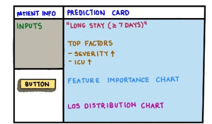
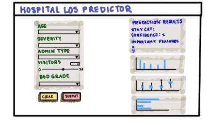

DECISION-SUPPORT DASHBOARD
Making Hospital LOS Prediction More Interpretable
March 2026 – May 2026

Intro
Hospital length of stay impacts patient outcomes, discharge planning, hospital capacity, staffing, and cost. However, many prediction tools are difficult to interpret or are not designed around real clinical workflow needs.
This project focused on building a prototype that balanced machine learning, usability, interpretability, and human-centered design. Instead of only showing a prediction, the tool helped users understand the predicted stay category, model confidence, and key factors influencing the result.
Skills
Machine Learning, Human Factors Engineering, Health Technology, Python, Streamlit, Gradio, scikit-learn, Data Preprocessing, Model Evaluation, Feature Importance, Usability Analysis, Decision-Support Design
My Role
As part of the Hospital Length of Stay project team, I contributed through UI design, user-centered research, model evaluation, results analysis, and presentation development. My work focused on translating clinical workflow needs into a clearer dashboard structure, reviewing usability and interpretability considerations, comparing Decision Tree and Random Forest performance, documenting evaluation metrics, and identifying model limitations and edge cases.
Problem
Hospitals and care teams often need to estimate how long a patient may stay in the hospital to support resource planning, discharge coordination, and care management. Existing LOS prediction tools can be model-focused, complex, or difficult for end users to interpret quickly.
The design challenge was not only to build a predictive model, but to create a tool that could answer: What is the predicted length-of-stay category? How confident is the model? What factors contributed to the prediction?
Background Evidence
Hospital length-of-stay prediction can support healthcare planning because earlier LOS estimates may help teams think through resource allocation, capacity, and care coordination. In this project, LOS prediction was treated as a planning-support problem rather than a replacement for clinical judgment. [1]
The project also connects to discharge planning and care-transition needs. AHRQ emphasizes that safe hospital discharge requires effective transfer of information among clinicians, patients, and families to reduce adverse events and prevent readmissions. This shaped the design focus on clear outputs, simple explanations, and information that could support planning conversations. [2]
Because machine learning tools can be difficult to trust when outputs are unclear, the dashboard prioritized interpretability and explainability. The prototype shows the predicted LOS category, model confidence, and top contributing features so users can understand the output instead of seeing a prediction alone. [3]
Users / Stakeholders
The tool was designed for potential healthcare stakeholders such as clinicians, care teams, hospital administrators, care coordinators, and hospital staff. These users need quick, interpretable information to support planning, rather than complex model outputs.
The prototype was designed as a proof-of-concept decision-support tool, not a clinically validated system or replacement for clinical judgment.
Research & Design Methods
The project used the AV Healthcare Analytics II dataset and framed length of stay as a classification problem. Instead of predicting an exact number of days, the model predicted a stay category, which made the output easier to interpret in a healthcare decision-making context.
The team cleaned and encoded the dataset, selected interpretable patient and admission-related features, and compared Decision Tree and Random Forest models using accuracy, precision, recall, and ROC-AUC. The final prototype used a Random Forest model because it provided slightly stronger evaluation performance while still supporting feature-importance explanations.
User Flow
The prototype was organized around a simple decision-support workflow. The goal was to help users move from patient inputs to prediction interpretation without needing to understand the full machine learning pipeline.
Process
The project followed a simple decision-support workflow: input → prediction → explanation. A small set of interpretable features was selected, including age, severity of illness, type of admission, visitors with patient, and bed grade.
The prototype evolved through multiple stages, starting from a low-fidelity sketch, moving into an early interactive prototype, and ending with a more refined dashboard. Each stage focused on improving clarity, interpretability, and reduced cognitive load.
Key Design Decisions
01
Predict LOS as a category instead of exact days
The model output was shown as a length-of-stay category to make the result easier to interpret and avoid presenting the prediction as more precise than it really is.
02
Show confidence with the prediction
Confidence output helps users understand uncertainty and avoid treating the model result as an absolute answer.
03
Include top important features
Feature-importance information supports transparency by showing which patient or admission-related factors contributed most to the prediction.
04
Use a simple dashboard layout
The final layout separates patient inputs, prediction output, confidence, and explanation to reduce cognitive load and support quicker review.
Prototype Development
The prototype evolved through multiple stages of design and refinement, beginning with a rough sketch, followed by a midpoint interactive prototype, and culminating in a more polished final dashboard.
The rough sketch established the initial information hierarchy, the midpoint prototype introduced the first functional workflow, and the final prototype refined the layout to better support explanation, confidence, and usability.


Rough Sketch. Early layout concept showing the planned structure for patient inputs, prediction output, top factors, and supporting visualizations.


Key Findings / Outcome / Impact
The final prototype included a patient input form, LOS category prediction, confidence score, top important features table, feature importance chart, and supporting LOS visualizations.
The main outcome was a human-centered decision-support dashboard that connected model output with explanation and visual context, rather than presenting a prediction alone.
To support results analysis, the project also included visualizations that explored relationships between admission type, visitor count, and length-of-stay categories. These charts helped connect the model output to interpretable patterns in the dataset and informed the final dashboard explanation structure.


Reflection / Next Steps
This project showed how predictive modeling can be made more usable through clear information hierarchy, confidence communication, and feature-level explanations. The strongest part of the project was not only generating a prediction, but helping users understand uncertainty and key factors behind the result.
Future improvements could include adding more clinically meaningful features, improving model tuning, conducting usability testing with healthcare stakeholders, adding clearer chart captions, improving accessibility, and exploring more advanced explainability methods.
References / Links
Note: Prototype hosted externally on Hugging Face Spaces by a project teammate. Screenshots are included here to preserve the design process and final interface.
[1] Hansen, E. R., Nielsen, T. D., Mulvad, T., Strausholm, M. N., Sagi, T., & Hose, K. (2023). Hospitalization length of stay prediction using patient event sequences. Source
[2] Agency for Healthcare Research and Quality. Care transitions from hospital to home: IDEAL discharge planning. Source
[3] Amann, J., Blasimme, A., Vayena, E., Frey, D., & Madai, V. I. (2020). Explainability for artificial intelligence in healthcare: A multidisciplinary perspective. BMC Medical Informatics and Decision Making, 20, 310. Source